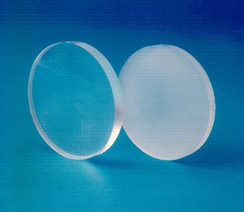
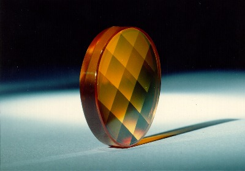

LMP>Research Guidelines>USIPREC>Ultraprecision Machining of Infrared Crystals
INTRODUCTIONThe fabrication of transmissible optic elements in the infrared specter through mono crystalline diamond machining opens new perspectives to the production of high quality aspheric lens. Then it is possible to improve optic system performance that work in infrared wave length, at the same time that it can reduce these systems production costs. However, this machining technology application in elements production makes necessary a deep phenomena knowledge that rule ductile and fragile material machining behavior, since material used to produce transmissible optic elements in the infrared specter presents a “hard and fragile” behavior. OBJECTIVES
PROCEDURESA deep systematic research is carried through to study the feed influence, deep of cutting, tool geometry and several others variables with high importance over the work piece surface quality. For this, machining assays are made in the zinc sulfate infrared crystals, Cleartran™ and germanium with diamond tools under different work conditions, roughness and optic quality of the generated surface are analyzed. Based on these results, more accurate parameters for optic elements production are determinate in each one of the assayed materials and the process variables influence over the final work result are analyzed.  RESULTSThe obtained results show that ultra precision machining is capable to generate surfaces with the necessary quality to employ it in high performance optic systems also in fragile behavior materials, as for example infrared crystal. Under optimized work conditions the generated surfaces are practically exempt of cracks and surface damage, presenting roughness Ra inferior to 2nm, roughness P-V lower than 20nm and sub micrometric shape deviations.  |
| Contact:
USIPREC Rolf Bertrand Schroeter Prof. Dr. Eng. |
Last update 21.07.2006 |